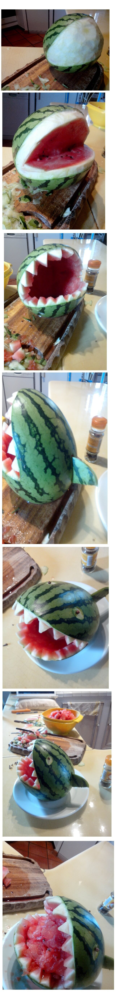
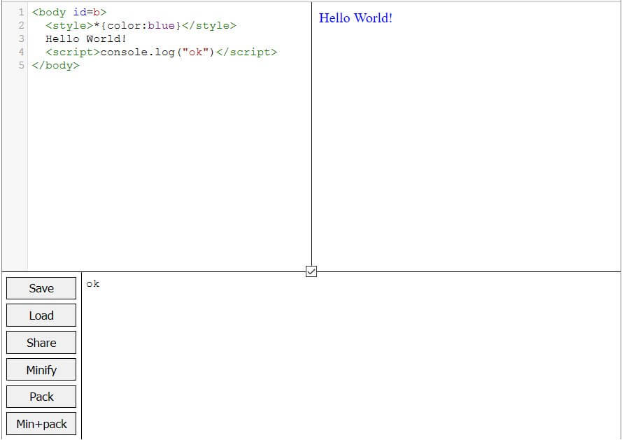

Game Audio Bundle MP3
March 2018
I downloaded Soniss's 76GB of public domain sounds effects in WAV, and converted them into 128kbps MP3s (2.5GB)
Website
Ask me anything
July 2015 - June 2016
I answer to all your questions on Github!
Website
Nice questions:
- How did you get into codegolfing and why?
- What was your best programming moment?
The Codegolf Team also answers all your questions on Reddit!
Website
3DShomebrew
october 2014 - WIP
I'm writing a tutorial and a toolset to help people develop homebrews for Nintendo 3DS.
Website
Tutorial
WiiU FPS
july 2014 - WIP
I'm the lead programmer of a WiiU indie game developed by a team of four people and published by Goodbye Galaxy Games. It's an old-style fast-paced FPS, to be released later.
The game is developed with Unity3D, and coded in UnityScript (based on JavaScript).

More info
Fruit carving
september 2014
My first attempt at fruit carving, with a tiny watermelon

Karoshi DS
2010
A Nintendo DS homebrew based on the famous Karoshi series. Developed with Jesse Venbrux for a 2010 DS homebrew competition hosted by Nintendomax. It's just a demo. You can play it on an emulator or on real hardware with a NDS flashcard.
It's coded in C using the PAlib homebrew library.
More info
Download
Easy classic flash game
2010
A musical flash game about a ball that has to avoid many traps (beta)

play (swf)
download (exe)
Polytech-o-scan
2010
A flash game that I made at university. The goal is to recognize shapes as they pass through a small hole on the screen. (it's in french though)

play (swf)
download (exe)
My university's lipdub
2009
I filmed the 2009 lipdub for my school "Polytech'Nice Sophia", featuring more than 80 actors! It won the french universities' lipdub reward in 2010.
LipDub Polytech'Nice Sophia - I Gotta Feeling from Hugo Dupras on Vimeo.
I also made a little gag reel video:
Mini Betisier du lipdub Polytech Sophia... par xema87
NES
Febuary 2018 - WIP 2017
A cheat-sheet for NES emulation and a WIP JS NES emulator

Github: here
Cheat-sheet: here
Demo: here
LOSSST
january 2018 - WIP
A HD reboot of my JS13K'17 awarded game.

Github: here
Twitter: here
Demo: here
Responsive Touch Game Framework
january - december 2017
A mini bootstrap for creating HTML5 games on a responsive canvas with unified mouse and touch inputs. Click / touch coordinates are conveniently given relative to the canvas' intrinsinc size.
Github: here
Demo: here

3D level editor
july 2017
A 3D level editor with plenty of options powered by CSS3D

Github: here
Demo: here
minix86
october 2016 - january 2017 - wip
A x86 (MS-DOS) documentation, disassembler and emulator

Github: here
Documentation: here
Disassembler demo: here
Maths
2016 - wip
Maths & trigonometry cheat sheet for 2D & 3D games

Gist: read here (contributions welcome!)
3D points
april 2017
Experiments with 3D points projection and rotation on a 2D canvas
09/2017 Update: Thumbs up for this tiny perspective engine by @c4ntelope

Github: here
Raycasting experiments
march, april 2017
Raycasting experiments, a la Wolfenstein, on a 2D canvas

Github: here
CSS3D cubes
october - december 2016
A hack/experiment allowing to display 25 CSS3D cubes despite Firefox's 100 CSS3D polygons limit. It was finally used in a real advent calendar.
Re: 25 CSS3D cubes in < 100 polygons: after 2h of prototyping and FOUR DAYS of hacking this m* f* Firefox, IT WORKS! https://t.co/phvFJAChV4 pic.twitter.com/XwjHoef5bq
— xem (@MaximeEuziere) 16 novembre 2016
Demo: here
Final product: here
CSS3D editor
october 2016 - wip
A js app allowing to create 3D scenes with planes and sprites in pure CSS, developed with Tommy Hodgins.
My CSS3D editor is getting some basic edition features :)https://t.co/Yr3PbjLg0Z
— xem (@MaximeEuziere) 1 novembre 2016
(Thanks to @innovati for the UI)#ScreenshotTuesday pic.twitter.com/sCONGeBVlI
Github: here
Demo: here
CSS3D prototypes
october 2016
A collection of tint CSS3D prototypes, developped in parallel of this article

Github: here
Latest demo: here
miniPiano
august 2016
A mini GUI to draw and export music in JS and WAV, developed with Tommy Hodgins.

Github: here
Demo: here
JS13k graphics editor
june, july 2016
A handy pathgraphics editor for 2D games, designed for the upcoming js13kgames competition.

Website: here
JS13k level editor
june, july 2016
A ~1kb generic level editor for 2D games, designed for the upcoming js13kgames competition.

Website: here
Random cellular automata
may 2016
An app that generates random cellular automata, inspired by Langton's Loops' engine.

Website: here
Launch: here
Codegolf IDE
febuary 2016
A Web IDE dedicated to HTML/JS code golfing, with live preview, Closure Compiler & RegPack integration, etc.

Website: here
Launch: here
Zpng: a pure JavaScirpt JsExe
december 2015
Developed with Subzey and Anders Kaare.
JsExe is a Windows program that allows to encode some JS code inside a PNG's pixels, and append some HTML code at the end to extract and execute it. This technique is called "PNG bootstrapping", and it's often used in JS demos of 1kb and up because of the nice gzip compression allowed by the PNG format.
Zpng is a pure JS app performing the same job, with a stronger compression and more simplicity because everything is done in the browser.
Website: http://codegolf.github.io/zpngEQCSS
december 2014 - december 2015 (WIP)
Developped with @innovati, Element Queries CSS (EQCSS) is a JS library bringing new features to regular CSS. The main feature is that the Element Queries can be used to target elements depending on their size or content, contrary to the media queries that only understand screen size.
Website: http://eqcss.github.io/eqcssCharsets
may 2014 - september 2015 (WIP)
A few experiments based on Unicode and character encodings on the Web
Website: http://xem.github.io/charsetsCSSslider
september 2014
I made a pure CSS slider, then I made this app to generate pure CSS sliders
Website: http://xem.github.io/cssslider/Window.all
september 2014
An experiment where I try to display recursively all the content of the root JavaScript object: window
Website: http://xem.github.io/window.all/EscApe
may 2014, WIP
EscApe (␛🐒) is a project dedicated to character encodings and string formats for the Web. It is regularly updated with new encoders and decoders.
 Website: http://xem.github.io/escape
Website: http://xem.github.io/escape
Stfrtime
april 2014
An optimized JS implementation of PHP's stfrtime(), used to format dates easily
Website: https://github.com/xem/strftimeMultiline ellipsis
febuary 2014
CSS ellipsis are handy but they only work with one line of text. Multiline ellipsis can be achieved with this CSS hack, but it's hard to set up and it doesn't work very well on old IE versions. Here's an alternative written in just 10 lines of JS code, plus a bit of CSS.
// Detect if the ellipsis is necessary and set the "overflow" class accordingly
function toggleEllipsis(p){
// Try to scroll 1px inside the element
p.scrollTop = 1;
// Measure the element's scroll
// If it's 1, it means that the elements has an overflow
if(p.scrollTop){
p.scrollTop = 0;
p.className = "overflow";
}
// Else, no overflow
else{
p.className = "";
}
}
Demo: here!
Tweet braille art generator
january 2014
A little app where you can draw something and tweet it using braille characters
Website: https://github.com/xem/braille-artArrayduce
january 2014
An app made to compress JS arrays for code-golfers. Website: http://xem.github.io/arrayduce
DrawCircles
january 2014
An app made to easily draw with CSS circles.
Website: https://github.com/xem/drawcircles
Inspired by @afragon, and his CSS art to which I contributed a little (compression, responsiveness, zoom).
Monitoring of JavaScript events
august / december 2013
A visual representation of all the DOM events that can occur in the browser.
GitHub page: https://github.com/xem/eventsDemo: http//xem.github.io/events
Swipe
july 2013
A tiny touchable slider made with jQuery (2ko)
Project: https://github.com/xem/swipeDemo: http://xem.github.io/swipe
Basis
july 2013
A minimalist and cross-browser HTML5/CSS/JS "boilerplate" (0.9ko)
Project: https://github.com/xem/BasisDemo: http://xem.github.io/Basis/demo.html
Text alignment
june/july 2013
I developed a pure CSS solution that allows to have some text centered inside a container when it's short (less than one line), and aligns it to the left when it's long (2+ lines). It works on all browsers, including IE6.
Simple case: text "center-left"
HTML code:
<div class=align-outer>
<div class=align-inner>
Text text text
</div>
</div>
CSS code:
.align-outer {
text-align: center;
}
.align-inner {
margin: 0 auto;
text-align: left;
display: inline-block;
*display: inline; *zoom: 1; /* IE < 8 */
}
Demo:
More complex case: text "centered-stretchable-left"
I also made a more generic solution that allows to center the text in a defined zone when it's short, and enlarging this zone when it's long (works on IE8+).
HTML code:
<div class=align-stretch-outer>
<div class=align-stretch-inner-1>
<div class=align-stretch-inner-2>
Text text
</div>
</div>
</div>
CSS code:
.align-stretch-outer {
text-align: left;
}
.align-stretch-inner-1 {
display: inline-block;
text-align: center;
min-width: 60%;
}
.align-stretch-inner-2 {
display: inline-block;
text-align: left;
}
Demo:
NB: of course, you can replace left by "right" or "justified" in the first CSS rule.
HeyListen
may 2013
A MVC micro-librairy in JavaScript, basen on custom events (158 bytes)
Demo: https://github.com/xem/HeyListenLightml
march 2013
HTML pages contain a lot of redundancy. This experiment aims to compress HTML server-side (in PHP), and uncompress it client-side (in JavaScript). Results show that we can save up to 46% bandwith (without Gzip), and up to 10% with Gzip enabled.
https://github.com/xem/lightmlHTML5 video, custom controls and browsers bugs
january 2013
A HTML5 video with custom controls in HTML/CSS/JS.
It works on all the modern browsers (IE > 9) and all the devices.
The goal of this video is to understand and list all the bugsthat we have to tackle when we want a cross-browser HTML5 video, and how to control this video with JavaScript.
Lazy.js
october 2012
A micro-librairy (0.7k) that contains the most useful jQuery functions and other polyfills, and works on all browsers. http://xem.github.io/Lazy
GBA.js
september 2012 - ?
A Gameboy Advance emulator in HTML5 (WIP)
Project: http://github.com/xem/GBA.jsDemo: http://xem.github.io/GBA.js
Debug version: http://xem.github.io/GBA.js/debug.html